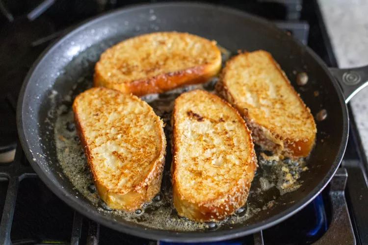

Challah is the best bread for French toast, bar none. It’s sturdy enough to stand up to its custard soak and a shower of maple syrup, yet tender and fluffy enough to cut with a fork.
Whether you’ve got some leftover challah from Shabbat dinner or you’re buying a loaf specifically to make French toast, it’s the most wonderful (and easy!) Saturday morning breakfast out there.
Challah is the best bread for French toast, bar none. It’s sturdy enough to stand up to its custard soak and a shower of maple syrup, yet tender and fluffy enough to cut with a fork. Cooked in a generous amount of butter, the thick slices of challah become beautifully browned after just a few minutes in the skillet.
Preparing French toast from challah is no different than using other breads. The method is simple: You’ll whisk up a mixture of milk and eggs flavored with vanilla and spices, dip the pieces of bread into the custard, then pan fry them in butter until golden brown.
I prefer a substantial (but not comically thick) slice of French toast, so I aim for slices that are about 3/4 to 1 inch thick. This way, the French toast is cooked all the way through while also getting browned nicely on the outside without the butter burning. Over medium heat, the slices cook in just three minutes per side.
You’ll want to monitor the heat on your stove, since they can vary. I also recommend using a fairly heavy, nonstick skillet if you’ve got one, for the most even cooking results.
For serving
In an 8x8 or 9x9 baking dish, whisk together the eggs, buttermilk, milk, cinnamon, nutmeg, and vanilla.
Place once slice of challah into the egg mixture and let it sit and soak up the mixture for about 30 seconds. Gently flip the slice over and let them soak for another 30 seconds.
As you place challah in the egg mixture, in a large (12-inch) nonstick skillet, melt 2 tablespoons of the butter over medium heat.
Use a pair of forks to lift out a slice of challah from the egg mixture, letting any excess liquid drip off. Transfer it to the skillet and repeat with the 3 slices of challah (you’ll cook 4 slices of challah at once).
Cook the French toast until golden brown and cooked through, flipping halfway through cooking, about 6 minutes total. Transfer to serving plates.
Add the remaining 2 tablespoons of butter to the skillet and repeat the dunking and cooking steps with the rest of the slices of challah.
Serve the French toast warm, topped with powdered sugar, maple syrup, and sliced bananas or berries.